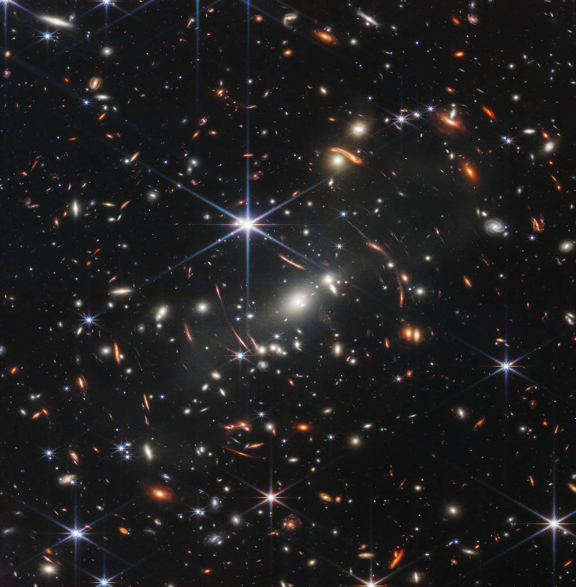

¡Ultimos Descubrimientos!
James Webb Envía la Imagen Infrarroja más Profunda del Universo Jamás Obtenida
James Webb Envía la Imagen Infrarroja más Profunda del Universo Jamás Obtenida
El Telescopio Espacial James Webb de la NASA ha captado la imagen infrarroja más profunda y nítida del universo lejano hasta la fecha. Conocida como el primer campo profundo de Webb, esta imagen del cúmulo de galaxias SMACS 0723 está repleta de detalles.
Miles de galaxias, incluidos los objetos más tenues jamás observados en el infrarrojo, han aparecido por primera vez en la vista captada por Webb. Esta porción del vasto universo tiene aproximadamente el tamaño de un grano de arena sostenido a la distancia de un brazo extendido por una persona en tierra.
Este campo profundo, tomado con la cámara del infrarrojo cercano (NIRCam, por sus siglas en inglés) de Webb, es una imagen compuesta hecha de imágenes en diferentes longitudes de onda, con un total de 12,5 horas de exposición, alcanzando mayores profundidades en longitudes de onda del infrarrojo que las de los campos más profundos del Telescopio Espacial Hubble, que llevaban semanas.
La imagen muestra el cúmulo de galaxias SMACS 0723 tal y como lucía hace 4.600 millones de años. La masa combinada de este cúmulo de galaxias actúa como una lente gravitacional, magnificando galaxias mucho más distantes detrás de él. La cámara NIRCam de Webb ha enfocado nítidamente galaxias distantes: tienen estructuras diminutas y tenues que nunca antes habían sido vistas, incluidos cúmulos estelares y características difusas. Los científicos pronto comenzarán a aprender más acerca de la masa, la edad, la historia y la composición de estas galaxias, a medida que Webb busca las galaxias más tempranas del universo.
